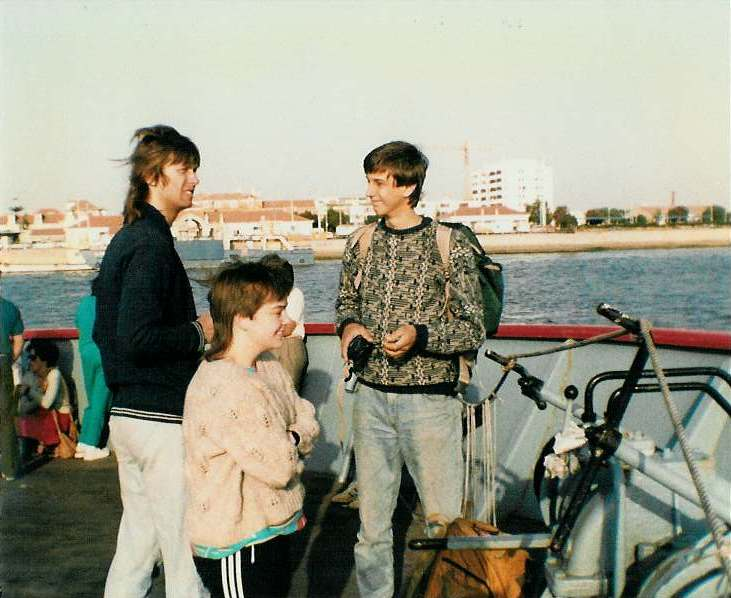

Inter Rail 1986 Day 8
Saturday 30th August 1986
Woke up terminally at 7.15am. The countryside was incredibly bare and arid. Passed through Monte Gordo and onto the Vila Real de Santo Antonio ferry stage to catch the Ayamonte ferry across the River Guadiana. There was a queue there so we joined the end of it whilst sending Jon to the front to see what the queue was for. Luckily for us it was indeed the queue for the ferry over to Spain. We got our passports stamped with an exit stamp and then had to pay for the ferry. We had exactly the right number of escudos put aside for that.
We were the last ones onto the third ferry of the day after a bit of judicious queue barging with our rucksacks.The ferry across the river Guadiana landed in Ayamonte 10 minutes later. Got our Spanish entry stamps, changed some money, bought some bread and headed off towards the train station having got some diections in the bread shop.

When we got there it was amazing. All it needed was a piece of tumbleweed rolling across the street and it could have been a Wild West ghost town waiting for Clint Eastwood to arrive. This appeared to be due to the fact that only 3 trains arriving and departing each day. The station cafe was open so to wake ourselves up we each ordered a "big white coffee". It took bloody hours to make each one. It was served in a long glass with long spoons.
The barman was listening to a cassette of mournful flamenco music. We tried to take the coffee's outside to escape the music but we soon found that taking the glasses out of the cafe onto the platform was a no-no so we had to sit through the interminable music. After a while some of our new friends from the train the previous night showed up.
The train left Ayamonte and arrived in Huelva, the regional capital, on time. It was a nice blue and yellow, air conditioned, tinted windowed local job. Had to get Talgo reservations for the journey to Sevilla. They cost 625pts and we had to queue for ages to get them. We got a nice bit of kip on the Talgo. Woke up to find there was a natural history programme about whales on the TV screens. Headphones would have cost us a further 200 pts so gave it a miss.
Our arrival in Sevilla had us totally confused as the station around which the book said we'd find cheap accommodation was passed and the train continued for another 15 minutes at least. When the train finally stopped at about 3.00pm we got off and literally walked into a wall of heat. We thought about heading back to the station mentioned by the book but it would have meant a long wait and would have left us miles from the San Bernado station where we were leaving from the next morning so decided to explore where we were.
Headed off in the scorching heat and within 80 yards of the station found a HSR class hostel. Had to disturb the siesta of the receptionist but found a room at 1166 pts each i.e. £2.75 so decided to take it. After settling in we went out at 4.00pm to try and work out exactly where we were. The heat was so intense we didn't get very far before collapsing uin a bar to down a couple of cold beers. We also found somewhere cheap to eat and bought a few postcards.
When we got back to our rooms we found we were sharing the verandah with a couple of English girls. They had flown down to Madrid and bussed it from there to Seville. They were away for three weeks and were going to spend it doing Sevilla, Cordoba and Granada. They shared their detailed map with us and gave us suggestions on the areas of Sevilla we should see with the limited time we had available. It turned out they were well within walking distance, provided it wasn't too hot. We all had a lovely hot shower in a proper show with a compartment around a bath. We eventually set off at 7.15pm.
As this was Spain we couldn't eat until eight so we stopped for a beer first. I had beef, chips and veg washed down with beer for dinner. Sightseeing trip started at 9.00pm ie when it was already dark. First sight seen was thousands of low flying swooping bats in an avenue of trees. Wandered pretty much unwittingly into what turned out to be La Plaza de España or Spanish Square. It was absolutely gorgeous. Completely symmetrical semi-circular walkway with a boating lake type strip around the outside with a large central square with a, at that time of night, non working fountain in the middle. There were two minaret type towers at each end. It was built for of the Ibero-american Exhibition of 1929. Sat there for a while taking it in and then wandered down a floodlit tree lined avenue listening to a band playing in a nearby bar and eating icecreams. The temperature at 11.00pm was 30C or 90F. Thank god it was not a wet heat. Who knows what the temperature as that afternoon at 4.00pm. Once back at the hotel spent some time watching the world go by from the verandah before turning in for the night.